似顔絵・イメージ
似顔絵
イケメンみたいな似顔絵を載せていますが、これにはニキビが含まれていません。
似顔絵１
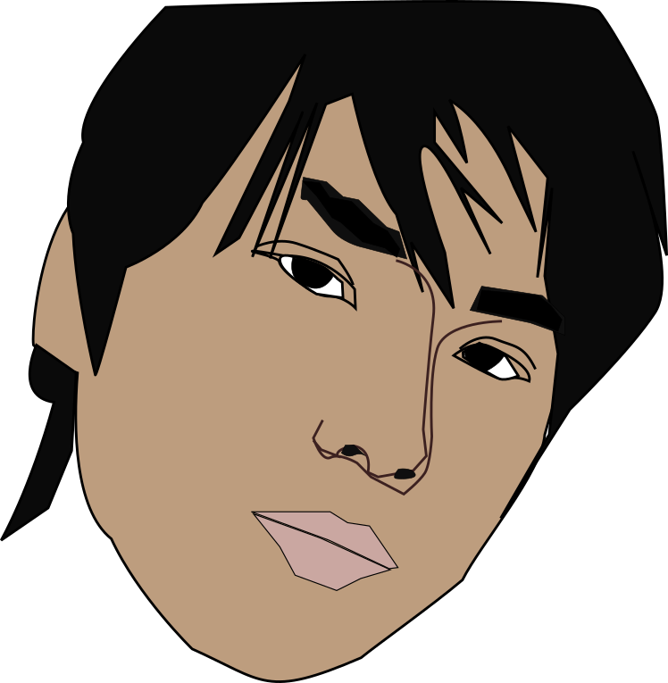
僕の似顔絵です。Inkscapeで描きました。
似顔絵２

ちょっと色が濃かったので、薄く直しました。
似顔絵３
いくらか修正。
似顔絵４
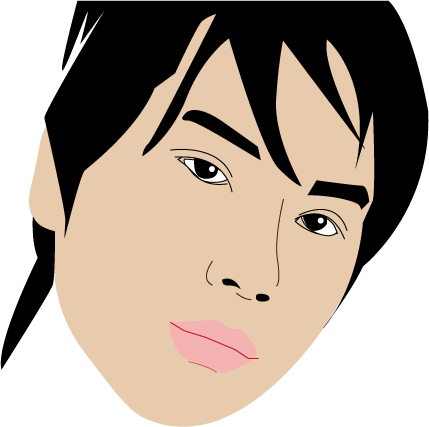
作り直し。
似顔絵５
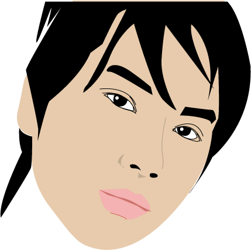
さらに修正。
似顔絵６
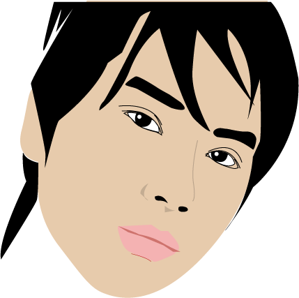
眉毛を修正。
似顔絵７
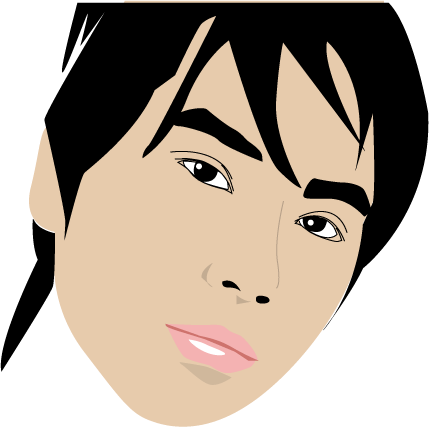
少し修正。
似顔絵８
少し修正。
似顔絵９
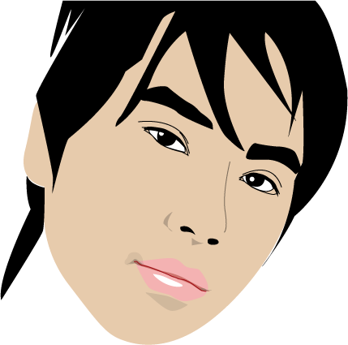
口元を笑顔に。
似顔絵１０
目元を可愛く。
似顔絵１１
細かい修正＆効果を適用。
似顔絵１４
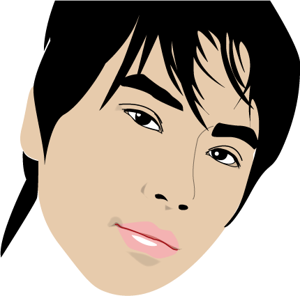
髪型を変更。
似顔絵１５
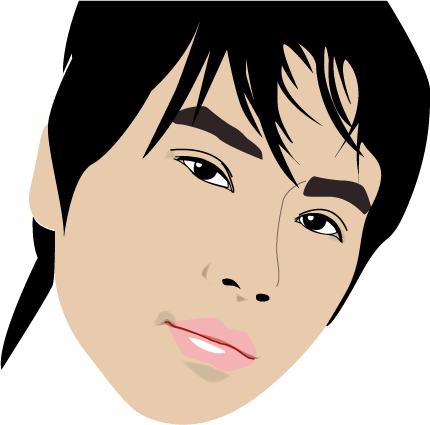
眉毛を変更。
似顔絵１６
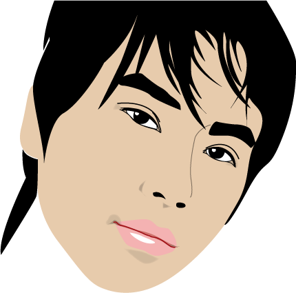
眉毛の色を黒に戻した。
似顔絵１７
髪を修正。
似顔絵１８
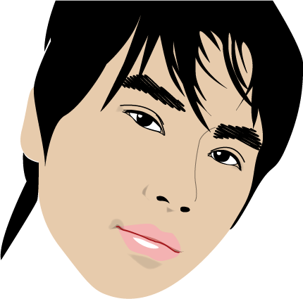
眉毛を修正。
旗
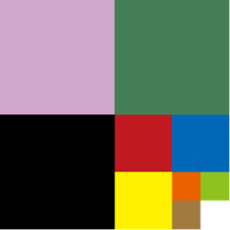
紫は「人生」あるいは「魂」を、緑は「地球」あるいは「自然」を、黒は「宇宙」を表している。四分割しながら三つの四角形が続いていくのは、「三人が永遠に続いていく」という「永遠」を表している。
紫は、昔の僕が作っていた「人生主義」の色を表している。それは、「青と赤の融和」である。
紫は「人生の自由」の象徴の色であり、社会に束縛されることなく、自由に労働し、自由に人生を創って生きる、「労働と人生の自由」を意味している。
緑は、「自然のことを忘れるな」という人類への警告である。同時に、「地球を愛する」という僕の思想を表している。
また、黒は「闇の中を自分の力で生きろ」という意味が込められている。
三色が続いていくのは、「色は変わっても構造は同じである」という意味が込められている。また、少しずつ色の範囲が定まっていくのは、「キャンバスに色を塗るかのように、この世界を塗りつぶし、開拓し、周りからたぐり寄せていけ」という意味がこめられている。
周りの世界をおおざっぱに捉え、まとめながら、永遠に同じ文章を書いていく、という本人の性格が表れている。
シンボル
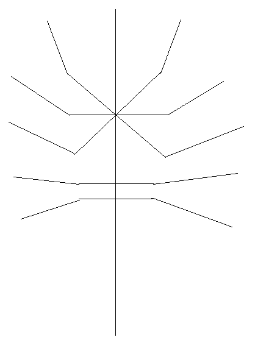
天使ガブリエルを表している。（以前は神だということになっていたが、偶像崇拝に見えるので改めた。）
イメージとしては、キリストの十字架の上で回転する光である。それが世界全てを照らし、頭脳を貫く。
全ての線で9本になるように考えられている。ワルキューレのウリエル、ガブリエル、ミカエル、ラファエル、ルシフェル、メタトロン、カマエル、ヨフィエル、ザドキエルの9天使を表し、その1体としてのガブリエルをキリストの十字から生まれる光（＝ビジョン）であるとし、その光は全ての方向に延びながら一つの方向をランプのように照らしている。
主線を含めると、9本ではなく10本になっているかもしれないが、その場合主線に居るのは在導万創である。全体で一つとなって、それを在導万創とする。天使と在導万創の関係が逆でも成り立つ。
表紙
西洋美術の巨匠の絵画の著作権が切れているので、自分のホームページの表紙に使わせていただきました。
絵画の名前と著者の情報があります。
ホームページのイメージ（表紙） - このホームページのイメージ（表紙）です。
小説のイメージ（表紙） - 小説のイメージ（表紙）です。